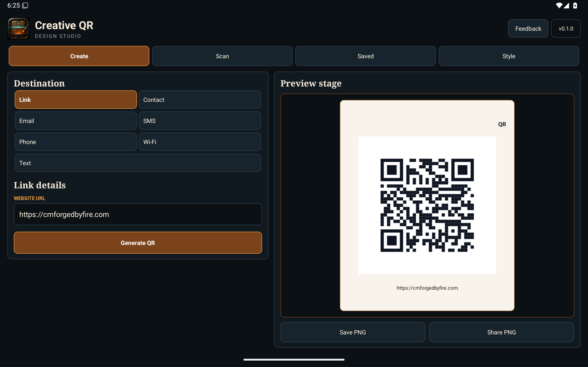
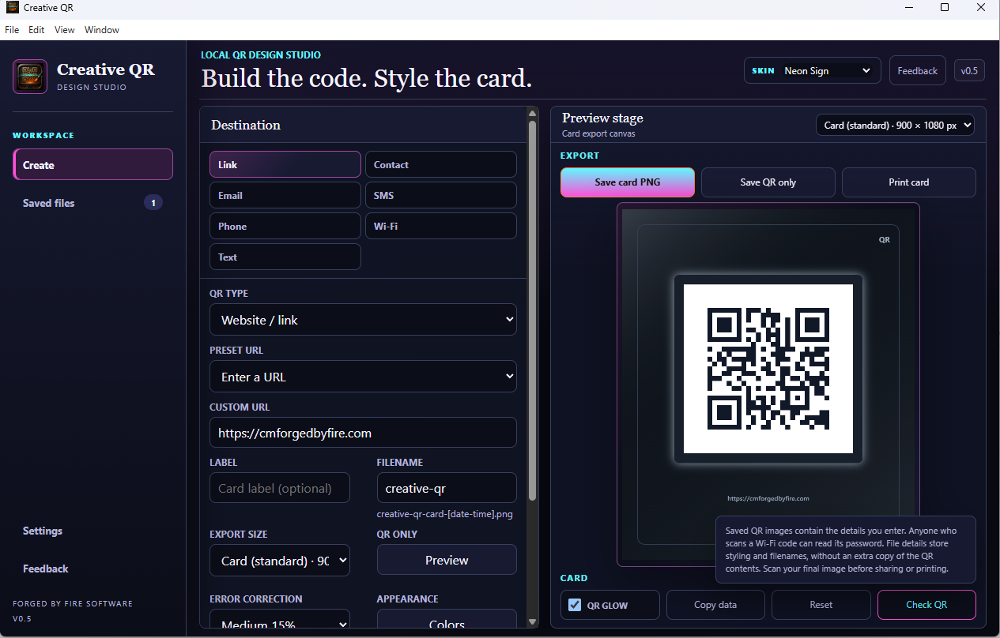
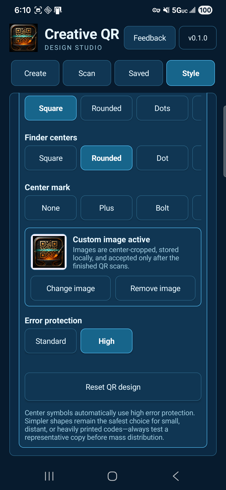

Seven QR types
Website/link, contact card, email draft, text-message draft, phone number, Wi-Fi connection details or plain text. Enter your own information and save reusable website presets.

Local QR creation for Windows and Android

Windows · Android
Create QR codes for links, contact details, messages, Wi-Fi and plain text. Customize the colors, add your own center icon, and save a standalone QR image or a printable card.
Available free on Microsoft Store and Google Play. Create on Windows or Android, with on-device scanning included in the Android edition.



Website/link, contact card, email draft, text-message draft, phone number, Wi-Fi connection details or plain text. Enter your own information and save reusable website presets.
Choose QR ink and paper colors, card palettes, backgrounds, frames and glow. Try different QR patterns and corners, or add a PNG, JPG or WebP center icon.
Export and manage QR images on Windows. On Android, save a verified PNG, keep an editable local design, or share the finished image through an app you choose.
The Windows edition includes printable-card presets such as square, sticker, flyer, story, widescreen, 4 × 6, Letter and A4. Physical print size depends on your printer's paper and scaling settings.
The Android edition validates newly selected QR looks on the device and includes a separate camera scanner. Decorative patterns, colors, and center images can affect readability, so final designs are checked again before Android saves or shares them.
QR creation and exports work locally. Windows profiles and presets and Android saved designs remain on the device. Creative QR does not add a hosted redirect or expiration date; the linked website or other destination still needs to remain valid.
Optional feedback uses the internet and includes your message, category, optional reply email, app version, and platform. QR contents, camera frames, icons, saved profiles, and saved designs are not attached automatically.